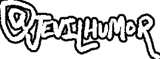

"Is it a joke?" + More!
The "too long; didn't read" of it all is simply: No!
This is a very real project, one that me and Kasssm are excited to deliver. We want people to experience UNDERSWAP as they've never before, in a fresh and new take on the formula and AU.
We are also opening up Team Applications! With such a big project, we're gonna need all the help we can get to get this baby out. Therefore, we're opening up 10 team slots, so if you wanna apply...
I also want to thank you all for the tremendous support and feedback we've recieved over the past 24 hours. We deeply appreciate it. We've also begun the writing process! The games engine is mostly complete too, apart from a few bugs that really need fixing.
I want to discuss one big difference that our UNDERSWAP take brings with it, and that lies in its story. I can't say too much, but it will take a darker, maybe even edgier undertone in comparision to the original UNDERSWAP, and maybe even UNDERTALE itself. That's all I can really say, don't want to spoil much.
Anyhoo, once again, thank you guys! Hope you're looking forward to future updates like we are!

P.S. - Personally speaking, I haven't been quite "up to snuff" on the programming side, feeling pretty unmotivated and tired. Still excited about the writing side though!